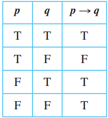
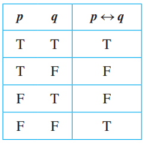

Translate back and forth between simple natural language statements and propositional logic, now with conditionals and biconditionals.
Evaluate the truth of propositional logical statements that include conditionals and biconditionals using truth tables.
Given a propositional logic statement and an equivalence rule, apply the rule to create an equivalent statement.
Explore alternate forms of propositional logic statements by application of equivalence rules, especially in order to simplify complex statements or massage statements into a desired form.
Build computational systems to solve the 7- or 4-segment LED displays, using both propositional logic expressions and equivalent digital logic circuits.
If p and q are statement variables, the conditional of q by p is “If p then q” or “p implies q” and is denoted p ⟹ q. It is false when p is true and q is false; otherwise it is true.
In a conditional, we call p the hypothesis (or antecedent) of the conditional and q the conclusion (or consequent).
Given statement variables p and q, the biconditional of p and q is “p if, and only if, q” and is denoted p ⇔ q. It is true if both p and q have the same truth values and is false if p and q have opposite truth values. The words if and only if are sometimes abbreviated iff.
⟹ is just like any other connective
(∨, ∧)
- distributive laws applies to ⟹ !!
> If 4,686 is divisible by 6, then 4,686 is divisible by 3
> If P, then Q
> P ⟹ Q > >
P is the Hypothesis and Q is the
Conclusion > > If P is false, the
conditional is by default true (vacuously true). If P
is false, it doesnt matter whether Q is false or not, hence the
statement will be true
> 
P ⟹ Q ≡ ¬P ∨ Q
> Example: Rewrite the following statement in if-then form.
> Either you get to work on time or you are fired
> → If you do not get to work on
time, then you are fired. >
The negation of “if p then q” is logically equivalent to “p and not
q.” ¬(P⟹Q) ≡ P ∧ ¬Q
> Example: Write negations of the following statements
> If my car is in the repair shop, then I cannot get to class
> → My car is in the repair shop and
I can get to class.
A conditional statement is logically equivalent to its
contrapositive. P ⟹ Q ≡ ¬Q ⟹ ¬P
> Example: Write the contrapositive for the following statement >
If Howard can swim across the lake, then Howard can swim to the
island
> → If Howard cannot swim to the
island, then Howard cannot swim across the lake
These two variants of the conditional are NOT
logically equivalent.
For the conditional statement P ⟹ Q 1.
Converse: If Q then P, Q ⟹ P 2.
Inverse: If not P then not Q, ¬P ⟹ ¬Q > Example: write
the converse and inverse of the folloing statement
> If Howard can swim across the lake, then Howard can swim to the
island
> → Converse: If Howard can swim to
the island, then Howard can swim across the lake.
> → Inverse: If Howard cannot swim
across the lake, then Howard cannot swim to the island.
“P only if Q” means that P occurs only if Q occurs also. This means if Q does not occur, then P also does not occur. > If P and Q are statements > “P only if Q" means “If not Q then not P" > which is equivalently written as the contrapositive of > “If P then Q" >
Example: convert the only if statement to if then
John will break the world’s record for the mile run only if he runs the mile in under four minutes
→ If John does not run the mile in under four minutes, then he will not break the world’s recordIf and Only IF
The biconditional “P if and only if Q” is denoted as P ⇔ Q ≡ (P⟹Q) ∧ (Q⟹P) ≡ (P∨Q) ∧ ¬(P∧Q) In iff the conditional in BOTH directions are true. Check connectives for more details.

Example: Rewrite the following statement as a conjunction of two if-then statements:
This computer program is correct if, and only if, it produces correct answers for all possible sets of input data.
→ If this program is correct, then it produces the correct answers for all possible sets of input data; and if this program produces the correct answers for all possible sets of input data, then it is correct.
If r and s are statements - r is a sufficient condition for s means “if r then s.” - r is a necessary condition for s means “if not r then not s.” - “if s then r” - r is a necessary and sufficient condition means “r if and only iff s”
Example: Rewrite the following statement in the form “If A then B”:
Pia’s birth on U.S. soil is a sufficient condition for her to be a U.S. citizen.
→ If Pia is born on U.S. soil, then she is a U.S. citizen.
Example: Use the contrapositive to rewrite the following statement in two ways:
George’s attaining age 35 is a necessary condition for his being president of the United States.
→ If George is the president of the United States, then he is 35 years old
→ If George is not 35 years old, he is not the president of the United States.
Only one rule per line! except for - DeMorgan and Double Negative - Associative + Commutative (grouping and rearranging) - then same law is applied on independent sections
For the conditional statement P ⟹ Q ≡ ¬P ∨ Q - It is false if and only if P is false and Q is true - same as “P only if Q” - Equivalent with its contrapositive ¬Q ⟹ ¬P - NOT equivalent with - Converse: Q ⟹ P - Inverse: ¬P ⟹ ¬Q - The Converse is equivalent to the Inverse
For the Unconditional statement P ⇔ Q - It is false only when P and Q are different - Equivalent with (P⟹Q) ∧ ¬(Q⟹P) and P ⊕ Q
If r and s are statements - r is a sufficient condition for s means “if r then s.” - r is a necessary condition for s means “if not r then not s.” - “if s then r” - r is a necessary and sufficient condition means “r if and only if s”